Welcome to the protist bookshelf. An advanced collection for the mildly educated biologist who wants to take their eukaryotic knowledge a bit further.
I am always looking for more resources on protists. If you know of any, message me.
▔▔▔▔▔▔▔▔▔▔▔▔▔▔▔▔▔▔▔▔▔▔▔
Alastair Simpson Course Note Collection
*These are extremely helpful, well-written, and rare. Start here for your eukaryotic education.
General Collection
Amoebozoa Collection
 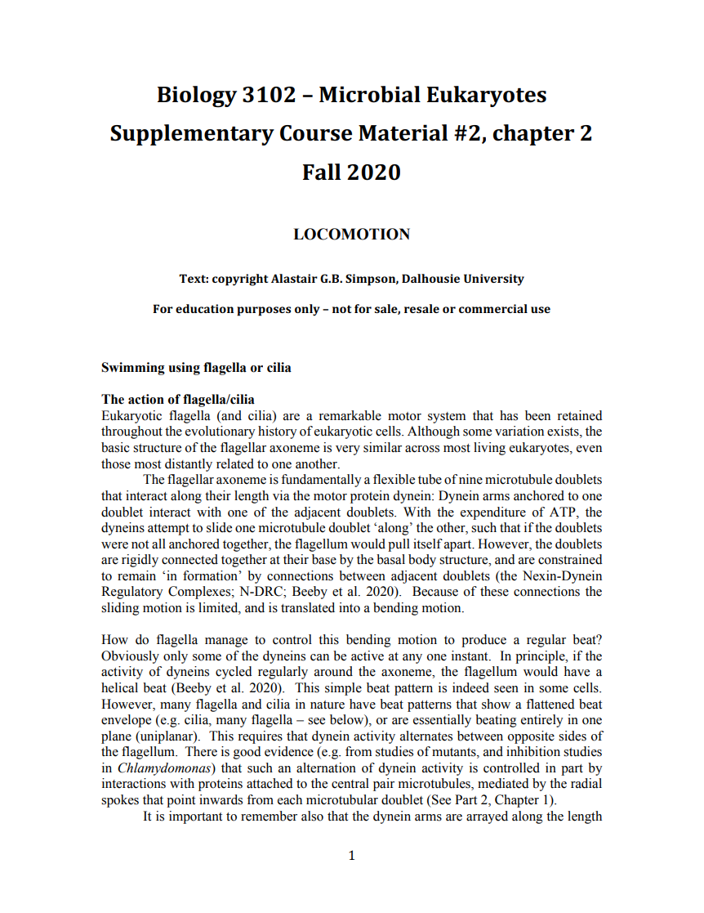
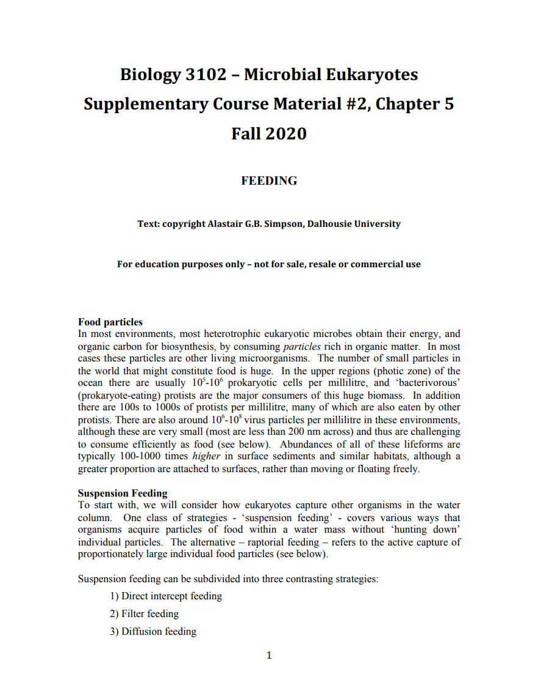
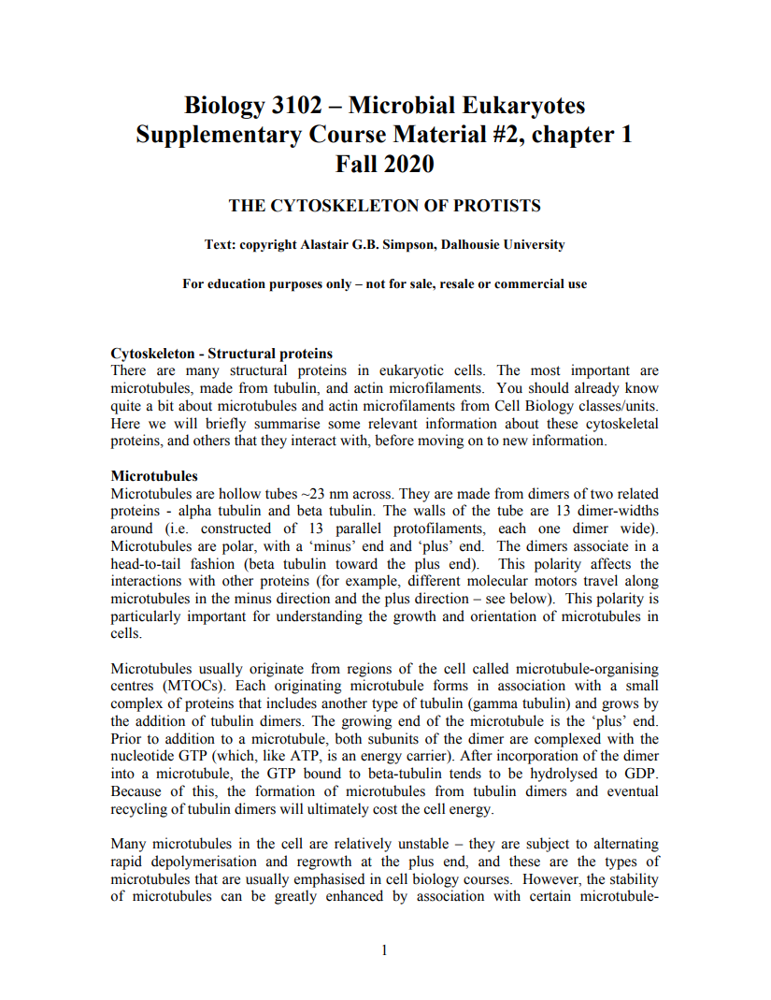
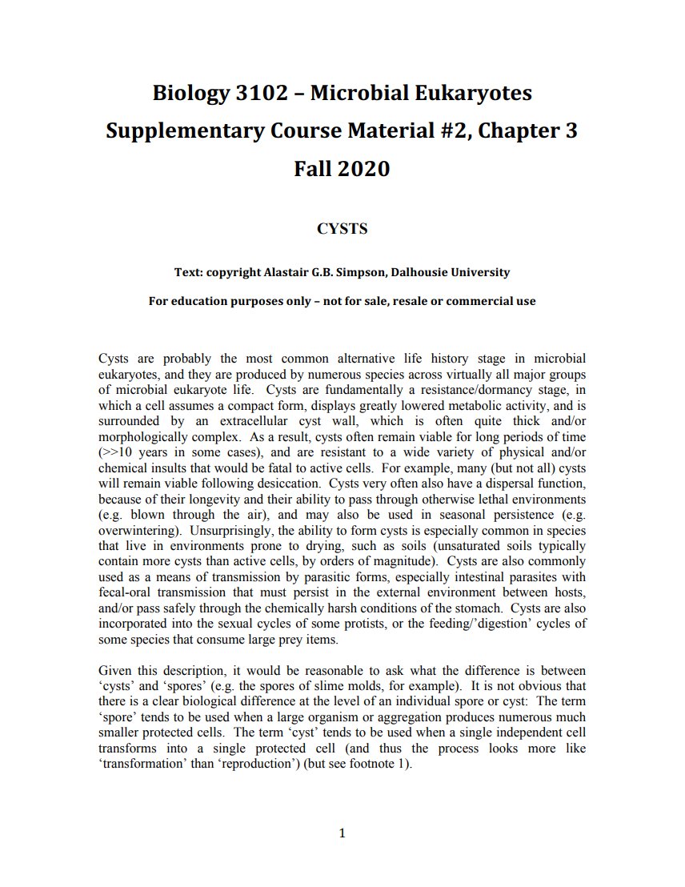
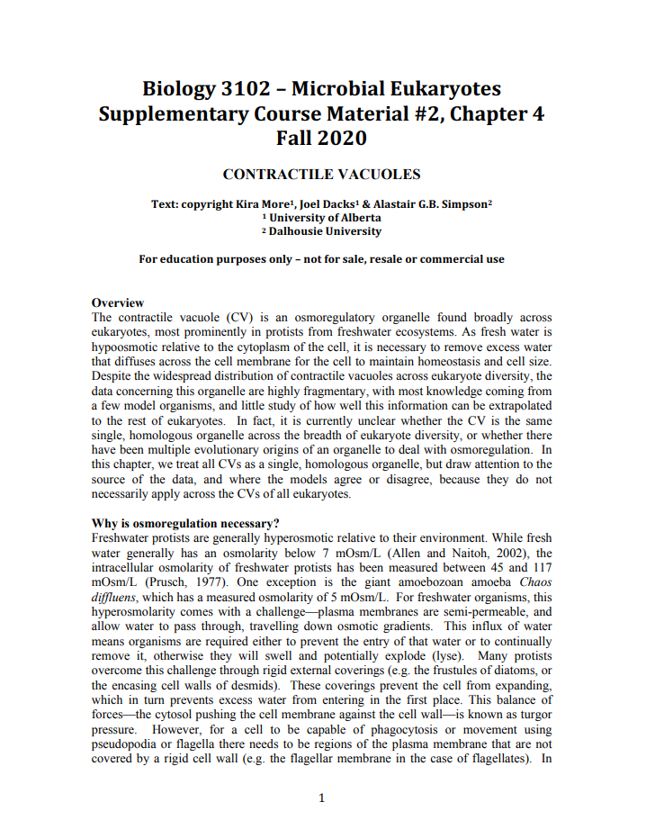
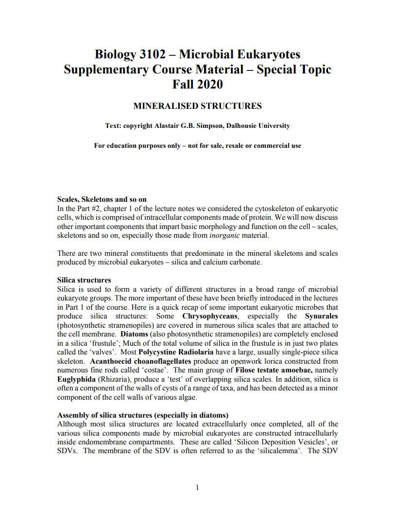
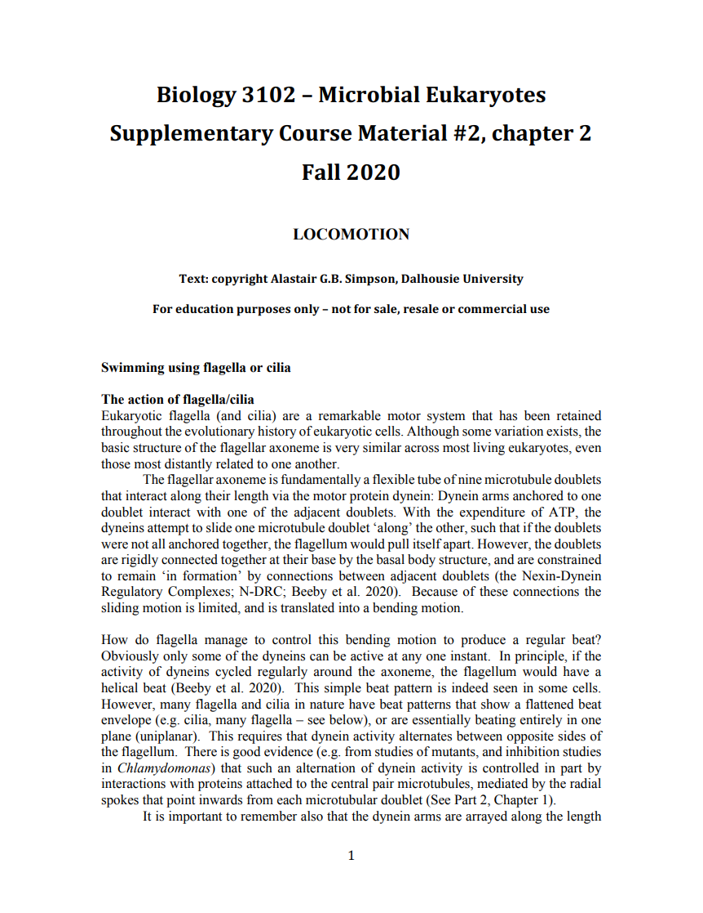
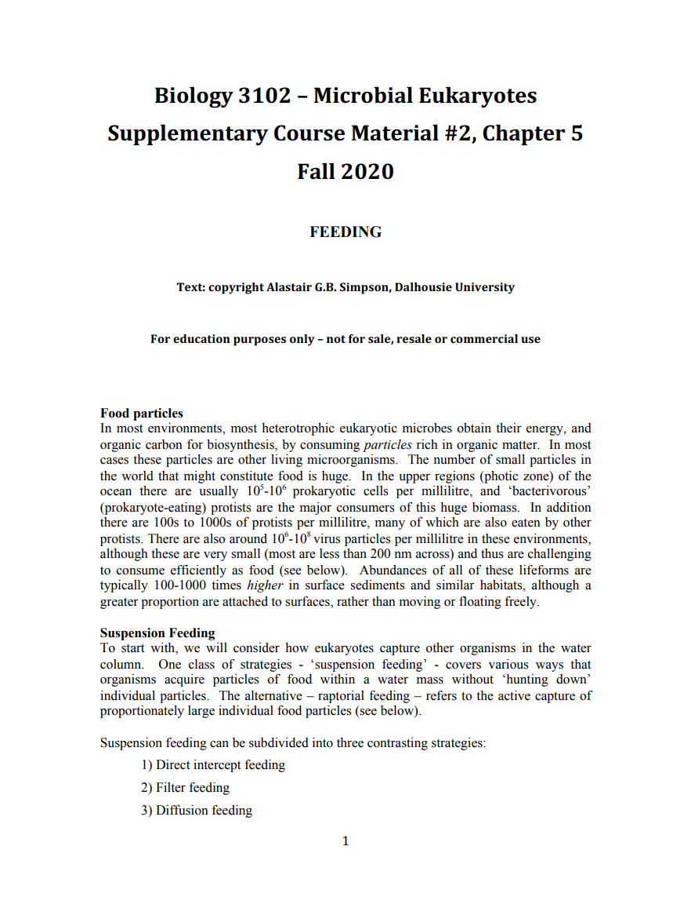
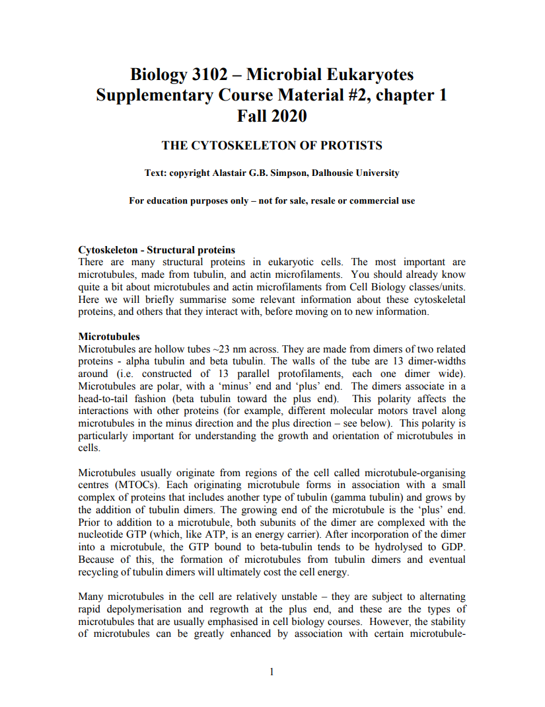
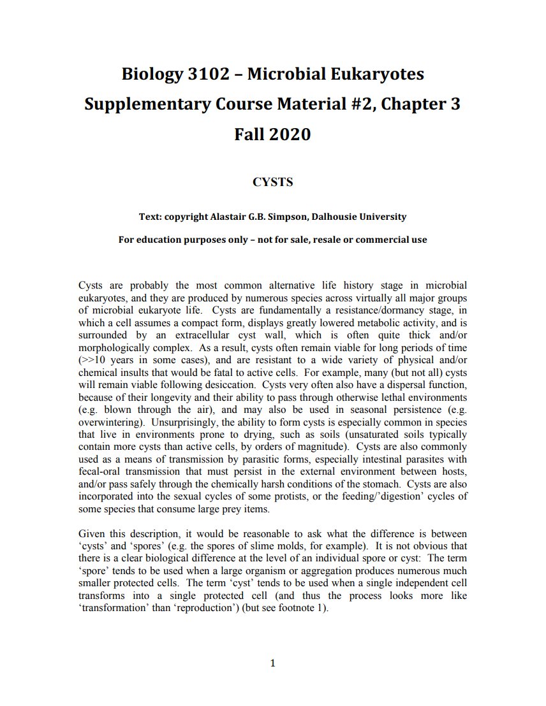
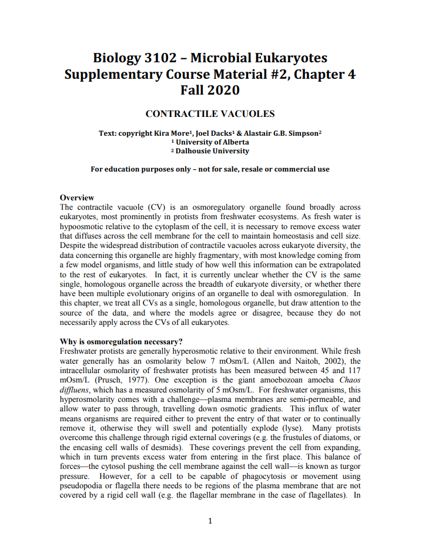
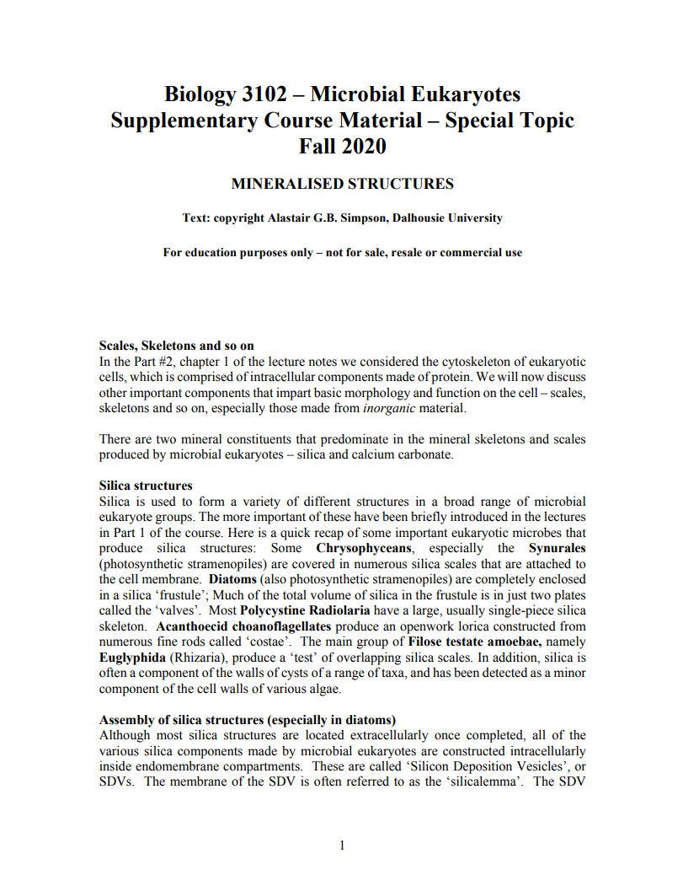